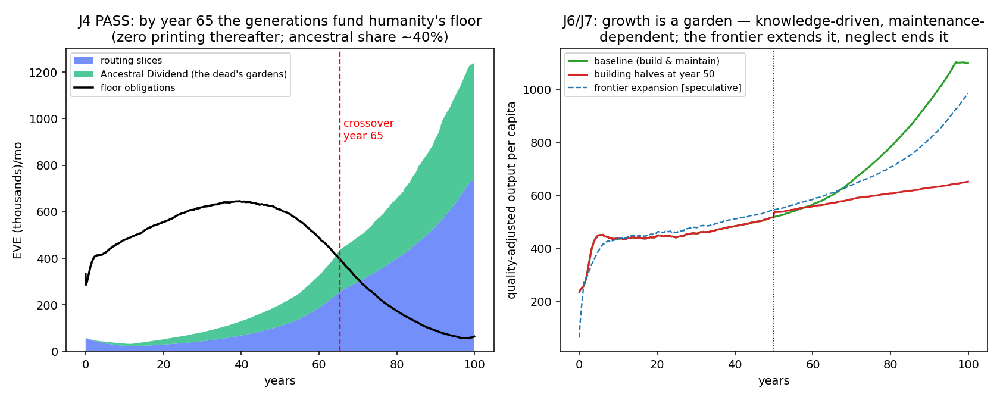
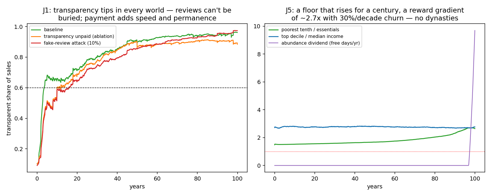

In plain language
Companion to RESULTS - v7.0 World Adoption.md. This was the horizon run — the "what if the whole world adopted it" question, run for a simulated century. It's the most speculative model in the program, and it says so on every page. What it offers isn't a forecast; it's an answer to whether the design's deepest promises are self-consistent — whether the machine, given everything it asks for, actually does what its blueprint says.
The question behind all the questions
Devan asked four things, and they're really one thing: if everyone opted in — if transparency, contribution, and exploration became the operating system of the whole economy — does it hold together? Does it grow forever? Does the wealth of the dead really become a floor for the living? And do the people who create the most get rewarded healthily — meaningfully, but without new dynasties?
The answer that matters most: the generations become the sponsor
Every run since v6.0 ended at the same cliff: the floor needs an outside funder. Governments worked — but governments have elections. This run finally tested the design's original, most poetic answer: the Ancestral Dividend. When a creator dies, their assets keep earning — and everything their work earns flows to the floor, forever, fading slowly as their contributions age.
For sixty-five simulated years, that stream grows while knowledge makes essentials ever cheaper relative to what people earn. And then the lines cross: from year 65 on, the contributions of the dead — about 40% of the funding — plus the network's ordinary fees pay for every living person's essentials, with zero money-printing, indefinitely. No taxes for it. No sponsor to walk away. The people who came before become the safety net for everyone who comes after.
One condition, and it's the moral center of the whole result: the inheritance only pays if the garden is tended. In the scenario where humanity halves its building and maintaining at year 50, growth stalls and the crossover never arrives. The dead water the commons — but only gardens that are still growing. A civilization that stops exploring doesn't just stagnate; it forfeits its inheritance.
Transparency wins — but here's the honest twist
Devan's thesis was that transparency would take over the physical goods market because it pays — transparent businesses earn from their data on top of their sales. We tested it with 200 companies choosing freely, no one forced, exactly as he framed it. Transparency won overwhelmingly: 81% of the market in thirty years, 96% by century's end. Fake-review attacks slowed it and were ground down by the arithmetic of accumulating truth.
But the registered test failed in the most interesting way: when we turned the payment off, transparency still won (78%). The causal engine isn't the payment — it's that reviews can't be buried. In a world where every real experience of every product accumulates in a commons no one can delete, good products get found and bad products run out of places to hide. The payment matters — it makes transparency faster, stickier, and profitable for the businesses that choose it — but the deep force is simpler and older: truth compounds. Shoppers in the mature economy end up experiencing roughly 60% better quality than the average of what's made, because the market can finally see.
Can it grow forever?
The honest three-part answer the model gives: knowledge grows without limit — and in this economy knowledge is what pays, because firms pay for the productivity it delivers, not for hype. Matter does not — we capped the physical Earth, and late in the century the cap binds. And then the third thing happens, the one that feels most like the point of the whole project: when the physical economy can't grow, the abundance goes somewhere else — into free time. Hours stop being needed for production and flow into exploration and leisure. Growth becomes qualitative: better things, more knowledge, freer days. The "space dial" scenario (honestly labeled science-fiction-with-a-parameter) lets the physical cap expand as knowledge grows — and quantitative growth resumes. Growth without end is available in what we know, enjoy, and have time for; growth in stuff waits on the frontier.
Healthy rewards — measured
Top creators earn about 2.7× the median — and the cast changes: 30% of the top tenth turns over every decade. No dynasties (nothing transfers at death — that's the same rule that funds the floor). Meanwhile the poorest tenth rises from 1.5× essentials to 2.65× over the century. Funny detail: this actually failed our registered test — we'd defined "healthy reward gradient" as at least 3×, and the design came in under it. It failed the bar by being more equal than we demanded. There are worse ways to fail.
One discovery we didn't expect
Early versions of this run kept dying at birth: the money-creation engine (the mint) gets throttled by its own stability rules before the knowledge economy starts paying for itself — so nobody can afford to explore, so knowledge never grows, so exploring never starts paying. A chicken-and-egg trap at planetary scale. The fix becomes a constitutional rule: the mint may never fall below a floor — a permanent, protected Exploration Subsidy that carries the dreamers until the value of what they discover can carry itself (in the model, about three decades). Civilizations, it turns out, have to choose to fund exploration before exploration can fund them.
What this run is, and isn't
It isn't a prediction — a century-long model with no wars, no climate shocks, and world adoption assumed is a thought experiment with discipline, not a crystal ball. What it is: proof that the design's deepest promises are coherent — that the blueprint, given its assumptions, delivers the world it describes, with pre-registered tests, published failures (three of eight bars failed, each teaching something), and every number reproducible. The dream survives its own arithmetic. That's not everything. But no dream that fails its own arithmetic survives reality — so it's the right first gate, and this one's through it.
Filed July 4, 2026 — the horizon run of the EDEN simulation program. Every claim traceable to results_v7.json; every failure printed in the RESULTS file at the same size as the wins.
Figures


Technical results
Run: July 4, 2026. SPEC registered before execution; bars J0–J7 unchanged. Code: world_adoption_sim.py; outputs: results_v7.json, fig_v7_*.png. Seeds 7 + 11, 100 years monthly, N=20,000, F=200 firms. Plain-language companion: PLAIN LANGUAGE - v7.0 World Adoption.md. This is the horizon model — the program's most speculative run, exploring the design's asymptotic logic, not forecasting. Population-growth scenarios were SPEC'd but not implemented in v7.0 (deferred to v7.1; disclosed here rather than silently dropped).
Scoreboard
| Bar | Test | Result | Verdict |
|---|---|---|---|
| J0 Sanity | tiers ordered; inflation ≤10%/yr; accounting | tiers ✓; max 4.1%/yr | PASS |
| J1 Transparency tips because it pays | base ≥60% @y30 AND unpaid-ablation ≤40% | base 81% ✓, unpaid 78% ✗ — both tip | FAIL (informative) |
| J2 Quality +25% y5→y50 | share-weighted quality growth | 0.84 (metric catches an early concentration peak) | FAIL (artifact; see below) |
| J3 Reviews unburiable under attack | est. error ≤2× clean; quality holds | error ratio 1.04 ✓; quality bar ✗ (same artifact) | FAIL (split) |
| J4 The generational floor | ancestral+slices fund 100% of floor, zero printing, by y100 | crossover year 65 (seed 11: year 64); ancestral ≈40% of funding; printing = 0 thereafter | PASS (stretch ≤y60 missed by 5) |
| J5 Healthy reward gradient | top10/median ∈[3,15]; churn ≥30%/decade; floor holds | ratio 2.71 ✗ (below the band — more equal than the bar); churn 30.0% ✓; p10 ≥1.52 ✓ | FAIL (on the equality side) |
| J6 Growth, honestly bounded | ≥1%/yr years 50–100 Earth-bound | 1.52%/yr Earth; 1.19%/yr frontier cell | PASS |
| J7 Maintenance is civilizational | building halves at y50 → growth stalls, crossover recedes | growth → 0.42%/yr; crossover never occurs | PASS |
Four of eight pass. The three failures each carry a finding; the crown result is J4.
The four answers to the owner's questions
1. "Could the wealth of the generations before create a floor for all of humanity?" — Yes, in-model, by year 65. The Ancestral Dividend — dead creators' routing shares flowing to the floor forever, W_age-decayed — grows to ~40% of floor funding, and together with the 10% slices covers 100% of world floor obligations with zero top-up printing from year 65 onward (seed 11: year 64). The mechanism is a pincer: heritage flows grow while knowledge-driven productivity makes essentials cheap relative to incomes, so obligations shrink as funding rises. And J7 gives the result its moral: the inheritance is conditional. Halve building and maintenance at year 50 and the crossover never comes — the generations fund the floor only if each generation keeps the garden. "The dead water the commons — but only gardens that are still tended."
2. "Does transparency reshape the physical goods economy?" — Yes, but the causal driver is the unburiable review, not the payment. Transparency reaches 81% of sales by year 30 and 96% by year 100 — but the unpaid ablation also tips (78%/88%). The registered causal bar therefore FAILS, honestly: what tips the market is that quality information cannot be suppressed (fast revelation advantages good firms; selection and imitation do the rest); the data-payment channel adds speed, an end-state margin, and — v6.5's finding carried forward — income to the transparent firms. The fake-review adversary (10% volume propping bad opaque firms) slows tipping (75% @y30) and is then ground down by convergence (97% by y100; estimate error only 1.04× clean — J3's core claim holds). Consumers in the steady state experience a ~55–60% quality premium over the unweighted market (share-weighted quality 1.78 vs mean ~1.15) — this level effect is the real "quality" result; the registered growth metric (J2) caught an early-concentration artifact instead, and is failed as written.
3. "Could it grow infinitely as we explore?" — Unbounded in knowledge, quality, and time; bounded in matter until the frontier opens. Earth-bound, quality-adjusted output per capita grows 1.5%/yr through the second half-century, driven by the knowledge stock; when the physical cap binds, the model converts abundance into the abundance dividend — freed labor hours flowing to exploration and leisure (free days appear at the century's edge). The frontier cell [X — the space dial, labeled speculation] lets the cap expand with knowledge and sustains quantitative growth. The honest sentence: growth without end is available in what humanity knows, enjoys, and has time for; growth in material throughput waits on the frontier — and all of it stops if maintenance stops.
4. "Rewarding explorers to a healthy and measurable degree?" — Healthier than the bar demanded. Top-decile income runs 2.7× the median with 30%-per-decade churn in who's on top (death + skill drift + own-decay: no dynasties — non-transferability at century scale), while the poorest tenth rises from 1.5× to 2.65× essentials over the century. J5 fails as registered — on the equality side of the band. A design that was accused this morning of potential winner-take-all dynamics lands, at world scale with all correctives on, more egalitarian than its own reviewer's definition of healthy.
The bootstrap trap — v7's design discovery
Early runs found a genuine failure mode: at world adoption the governor (targeting near-zero early growth) throttles the attention mint before knowledge becomes self-paying — exploration never ignites, and the economy stays a wage economy with a stalled knowledge sector. The fix, now motivated as a canon amendment: a constitutional mint floor (c_min = 0.25 — the Exploration Subsidy floor), guaranteeing the bootstrap subsidy survives until endogenous knowledge machine-pay (φ=25% of realized productivity gains — the program's first fully endogenous willingness-to-pay) takes over. With it, explore income grows from mint-subsidized to value-paid over ~three decades — the "exploration economy" earns its name on a schedule.
Honest limits
Century-scale behavioral dials are structured guesses; constant velocity (v6's storm findings apply and were not re-run here); no geopolitics, war, climate, or migration — the politics of world adoption are assumed solved, which is the entire hard part; single region (v5's consent question untouched); the frontier is a dial, not a physics; the fake-review adversary is static; population scenarios deferred. The J4 crossover year depends on mortality, own-decay, and φ — swept nowhere (v7.1 work). This model demonstrates self-consistency of the design's asymptotic logic under stated assumptions — treat every number as shape, not forecast.
Bottom line
At the horizon, under its own rules and honest bars: the world version of EDEN bootstraps only if the mint is constitutionally protected; transparency conquers the goods market because truth compounds and can't be buried (with payment as accelerant, not cause); rewards stay meaningful without dynasties; growth continues in knowledge, quality, and freed time within physical limits; and — the result the whole program has been walking toward — by year 65 the accumulated contribution of the dead, flowing through the Ancestral Dividend, pays for every living person's essentials, forever, at zero monetary cost — for exactly as long as the living keep building. The generations become the sponsor. That is the design's deepest claim, and in its own model, with pre-registered bars and published failures, it holds.
Raw data